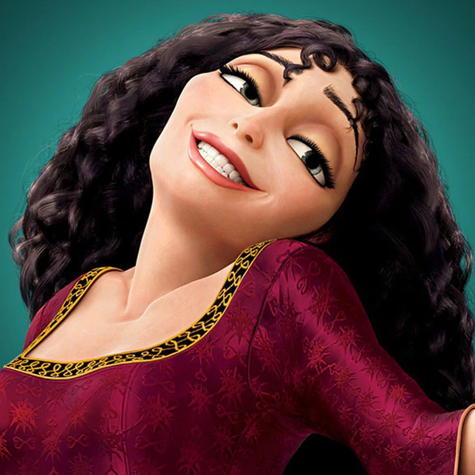

-
RAPUNZEL
Princess Rapunzel, born with long luscious hair as the result of being born with the power of the sun drop, was stolen away by Mother Gothel so that she can use her hair's power. Rapunzel eventually escapes with Flynn Rider and goes on an adventure that changes her life. Always optimistic and searching for the brighter side of things, Rapunzel does all she can to help her friends and family by showing that nothing can keep her down.
-
FLYNN RIDER
Eugene Fitzherbert (born Horace and better known as Flynn Rider) was abandoned by his father in order to protect him, Eguene, formally Flynn, grew up as a common, cocky and arrogant thief. His luck changed when he found himself unwillingly rescuing Rapunzel from a tall tower. Since then, he has fallen in love with her and has changed his ways to be by her side by protecting her at all costs until he eventually weds her.
-
MOTHER GOTHEL
Mother Gothel is the main antagonist of Tangled. Having lived for years, Gothel became obsessed with regaining her youth. She was ultimately forced to kidnap Rapunzel and raise her as her own at the cost of abandoning her actual daughter, Cassandra. Gothel mostly cares for her own vanity and while she brings out her maternal instincts, underneath it all she is a cruel and sinister woman who will not stop at anything to get what she wants.
-
MAXIMUS
Maximus is a horse for the royal guard. For years, he has been dead set on bringing in Flynn Rider to face his crimes. However, due to Rapunzel's influence and Flynn's eventual reformation, Maximus has become one of their closest allies. A strong, sturdy and reliable horse, Maximus is more of a soldier than the actual soldiers in Corona.
-
PASCAL
Pascal is a chameleon who was washed away one rainy night until he found himself adopted by a young Rapunzel. Considered Rapunzel's best animal friend, Pascal is ever loyal to her and despite his small appearance, hides boundless energy that always comes in handy when protecting his friends.